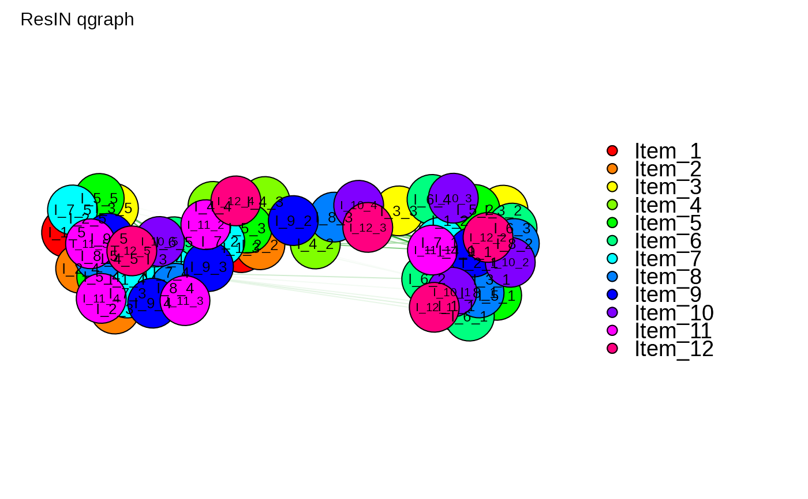

Performs Response Item-Network analysis (ResIN) and exports the results as an qgraph object.
Usage
ResIN_qgraph(
df,
node_vars = NULL,
cor_method = "auto",
weights = NULL,
method_wCorr = "Polychoric",
remove_negative = TRUE,
plot_graph = TRUE,
plot_title = "ResIN qgraph",
qgraph_arglist = NULL,
EBICglasso = TRUE,
EBICglasso_arglist = NULL,
same_item_groups = FALSE,
cluster = FALSE
)Arguments
- df
A data-frame object containing the raw data.
- node_vars
An optional character string detailing the attitude item columns to be selected for ResIN analysis (i.e. the subset of attitude variables in df).
- cor_method
Which correlation method should be used? Defaults to "auto" which applies the
cor_autofunction from theqgraphpackage. Possible arguments are"auto","pearson","kendall", and"spearman".- weights
An optional continuous vector of survey weights. Should have the same length as number of observations in df. If weights are provided, weighted correlation matrix will be estimated with the
weightedCorrfunction from thewCorrpackage.- method_wCorr
If weights are supplied, which method for weighted correlations should be used? Defaults to
"Polychoric". SeewCorr::weightedCorrfor all correlation options.- remove_negative
Should all negative correlations be removed? Defaults to TRUE (highly recommended). Setting to FALSE makes it impossible to estimate a force-directed network layout. Function will use igraph::layout_nicely instead.
- plot_graph
Optionally, should
qgraphgenerate print the network upon generation? Defaults to TRUE.- plot_title
Optionally, assign a title to the
qgraphplot.- qgraph_arglist
An optional argument list feeding additional instructions to
qgraph. Needs to be specified as an object list containing the arguments to be passed down.- EBICglasso
Should a sparse, Gaussian-LASSO ResIN network be estimated? Defaults to FALSE. If set to TRUE,
EBICglassofunction from theqgraphpackages performs regularization on (nearest positive-semi-definite) ResIN correlation matrix.- EBICglasso_arglist
An argument list feeding additional instructions to the
EBICglassofunction ifEBICglassois set to TRUE. Needs to be specified as an object list containing the arguments to be passed down.- same_item_groups
Optionally, should the qgraph object automatically incorporate a "group" attribute that groups item response nodes by the items that repose nodes stem from?
- cluster
Optional, should community detection be performed on item response network? Defaults to FALSE. If set to TRUE, performs "cluster_leading_eigen" function from the igraph package and stores results in plotting_frame.
Value
A list object containing the qgraph output object, a numeric vector detailing which item responses belong to which item (same_items), and optionally a matrix detailing community membership of different item nodes (clustering).
References
Epskamp S, Cramer AOJ, Waldorp LJ, Schmittmann VD, Borsboom D (2012). “qgraph: Network Visualizations of Relationships in Psychometric Data.” Journal of Statistical Software, 48(4), 1–18.
Examples
# \donttest{
## Load the 12-item simulated Likert-type ResIN toy dataset
data(lik_data)
## Run the function:
ResIN_qgraph <- ResIN_qgraph(lik_data, same_item_groups = TRUE)
#> Variables detected as ordinal: Item_1_1; Item_1_2; Item_1_3; Item_1_4; Item_1_5; Item_2_1; Item_2_2; Item_2_3; Item_2_4; Item_2_5; Item_3_1; Item_3_2; Item_3_3; Item_3_4; Item_3_5; Item_4_1; Item_4_2; Item_4_3; Item_4_4; Item_4_5; Item_5_1; Item_5_2; Item_5_3; Item_5_4; Item_5_5; Item_6_1; Item_6_2; Item_6_3; Item_6_4; Item_6_5; Item_7_1; Item_7_2; Item_7_3; Item_7_4; Item_7_5; Item_8_1; Item_8_2; Item_8_3; Item_8_4; Item_8_5; Item_9_1; Item_9_2; Item_9_3; Item_9_4; Item_9_5; Item_10_1; Item_10_2; Item_10_3; Item_10_4; Item_10_5; Item_11_1; Item_11_2; Item_11_3; Item_11_4; Item_11_5; Item_12_1; Item_12_2; Item_12_3; Item_12_4; Item_12_5

# }